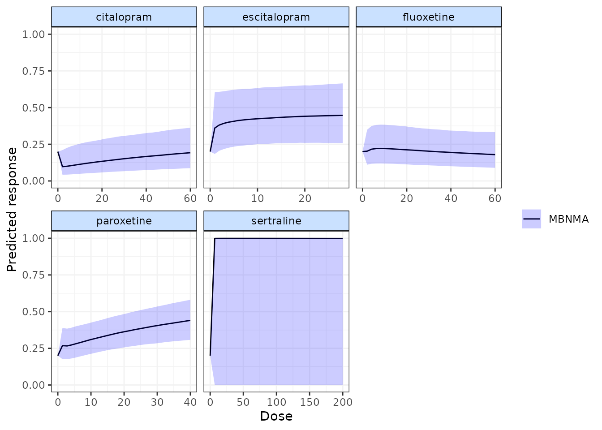
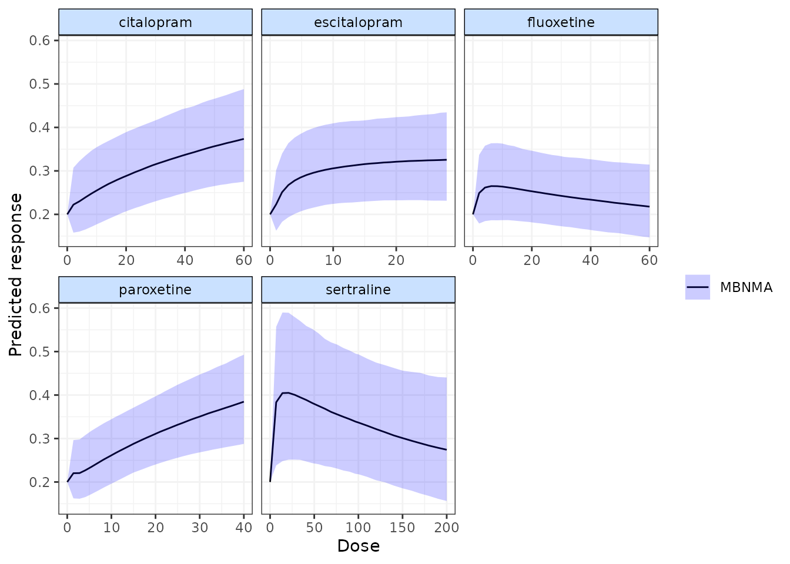

metaregression-6.RmdStudy-level covariates can be included in the model to adjust treatment effects following an approach for meta-regression outlined in NICE Technical Support Document 3 (Dias et al. 2011). This can be used to explore and account for potential effect modification.
Following the definition in NICE Technical Support Document 3, network meta-regression can be expressed as an interaction on the treatment effect in arms \(\geq2\):
\[\theta_{i,k}=\mu_i+(f(x,\beta_{a_{i,k}})-f(x,\beta_{a_{i,1}})) + (\psi_{1,a_{i,k}}-\psi_{1,a_{i,1}})\]
where \(\theta_{i,k}\) is the linear predictor, \(\mu_{i}\) is the baseline effect on arm 1, \(f(x,\beta_{a_{i,k}})\) is the dose-response function at dose \(x\) with dose-response parameters \(\beta_{a_{i,k}}\) for agent \(a\) in arm \(k\) of study \(i\). \(\psi_{1,a_{i,k}}\) is then the effect modifying interaction between the agent in arm \(k\) and the network reference agent (typically Placebo in a dose-response analysis).
To improve estimation:
# Using the SSRI dataset
ssri.reg <- ssri
# For a continuous covariate
ssri.reg <- ssri.reg %>%
dplyr::mutate(x.weeks = weeks - mean(weeks, na.rm = TRUE))
# For a categorical covariate
table(ssri$weeks) # Using 8 weeks as the reference
ssri.reg <- ssri.reg %>%
dplyr::mutate(r.weeks = factor(weeks, levels = c(8, 4, 5, 6, 9, 10)))
# Create network object
ssrinet <- mbnma.network(ssri.reg)
#> Values for `agent` with dose = 0 have been recoded to `Placebo`
#> agent is being recoded to enforce sequential numberingFor performing network meta-regression, different assumptions can be made regarding how the effect modification may be shared across agents:
The least constraining assumption available in MBNMAdose
is to assume that the effect modifier acts on each agent independently,
and separate \(\psi_{1,a_{i,k}}\) are
therefore estimated for each agent in the network.
A slightly stronger assumption is to assume that agents within the same class share the same interaction effect, though classes must be specified within the dataset for this.
# Regress for continuous weeks Separate effect modification for each agent vs
# Placebo
ssrimod.a <- mbnma.run(ssrinet, fun = dfpoly(degree = 2), regress = ~x.weeks, regress.effect = "agent")
summary(ssrimod.a)
#> ========================================
#> Dose-response MBNMA
#> ========================================
#>
#> Likelihood: binomial
#> Link function: logit
#> Dose-response function: fpoly
#>
#> Pooling method
#>
#> Method: Common (fixed) effects estimated for relative effects
#>
#>
#> beta.1 dose-response parameter results
#>
#> Pooling: relative effects for each agent
#>
#> |Agent |Parameter | Median| 2.5%| 97.5%|
#> |:------------|:---------|-------:|-------:|-------:|
#> |citalopram |beta.1[2] | -0.0921| -0.3599| 0.1623|
#> |escitalopram |beta.1[3] | 0.1329| -0.1286| 0.4042|
#> |fluoxetine |beta.1[4] | 0.2717| 0.0467| 0.5046|
#> |paroxetine |beta.1[5] | -0.1404| -0.4415| 0.1613|
#> |sertraline |beta.1[6] | 1.3226| -7.8854| 10.3403|
#>
#>
#> beta.2 dose-response parameter results
#>
#> Pooling: relative effects for each agent
#>
#> |Agent |Parameter | Median| 2.5%| 97.5%|
#> |:------------|:---------|-------:|-------:|-------:|
#> |citalopram |beta.2[2] | 0.0668| -0.0030| 0.1408|
#> |escitalopram |beta.2[3] | -0.0076| -0.0966| 0.0737|
#> |fluoxetine |beta.2[4] | -0.0665| -0.1327| -0.0002|
#> |paroxetine |beta.2[5] | 0.0916| -0.0022| 0.1841|
#> |sertraline |beta.2[6] | -0.1820| -1.1618| 0.8251|
#>
#>
#> power.1 dose-response parameter results
#>
#> Assigned a numeric value: 0
#>
#> power.2 dose-response parameter results
#>
#> Assigned a numeric value: 0
#>
#> Meta-regression
#>
#> Covariates interacting with study-level relative effects: x.weeks
#> Common (identical) covariate-by-agent effects
#>
#>
#> |Agent |Parameter | Median| 2.5%| 97.5%|
#> |:------------|:------------|-------:|--------:|-------:|
#> |citalopram |B.x.weeks[2] | -0.1579| -0.3352| 0.0079|
#> |escitalopram |B.x.weeks[3] | 0.1601| -0.0319| 0.3592|
#> |fluoxetine |B.x.weeks[4] | -0.0264| -0.1687| 0.1166|
#> |paroxetine |B.x.weeks[5] | 0.0836| -0.0252| 0.1947|
#> |sertraline |B.x.weeks[6] | 1.4210| -18.0748| 20.5588|
#>
#>
#> Model Fit Statistics
#> Effective number of parameters:
#> pD calculated using the Kullback-Leibler divergence = 74.5
#>
#> Deviance = 890.6
#> Residual deviance = 190.9
#> Deviance Information Criterion (DIC) = 965.1Within the output, a separate parameter (named
B.x.weeks[]) has been estimated for each agent that
corresponds to the effect of an additional week of study follow-up on
the relative effect of the agent versus Placebo. Note that due to the
inclusion of weeks as a continuous covariate, we are assuming a linear
effect modification due to study follow-up.
Alternatively, the effect modification for different agents versus the network reference agent can be assumed to be exchangeable/shared across the network about a common mean, \(\hat{\psi}\), with a between-agent standard deviation of \(\tau_\psi\):
\[\psi_{1,a_{i,k}} \sim N(\hat{\psi}, \tau^2_\psi)\]
# Regress for continuous weeks Random effect modification across all agents vs
# Placebo
ssrimod.r <- mbnma.run(ssrinet, fun = dfpoly(degree = 2), regress = ~x.weeks, regress.effect = "random")
summary(ssrimod.r)
#> ========================================
#> Dose-response MBNMA
#> ========================================
#>
#> Likelihood: binomial
#> Link function: logit
#> Dose-response function: fpoly
#>
#> Pooling method
#>
#> Method: Common (fixed) effects estimated for relative effects
#>
#>
#> beta.1 dose-response parameter results
#>
#> Pooling: relative effects for each agent
#>
#> |Agent |Parameter | Median| 2.5%| 97.5%|
#> |:------------|:---------|-------:|-------:|------:|
#> |citalopram |beta.1[2] | -0.0713| -0.6202| 0.2088|
#> |escitalopram |beta.1[3] | 0.2440| -0.0324| 0.5390|
#> |fluoxetine |beta.1[4] | 0.2659| 0.0253| 0.5325|
#> |paroxetine |beta.1[5] | -0.0938| -0.4674| 0.1843|
#> |sertraline |beta.1[6] | 0.6658| 0.1637| 1.1718|
#>
#>
#> beta.2 dose-response parameter results
#>
#> Pooling: relative effects for each agent
#>
#> |Agent |Parameter | Median| 2.5%| 97.5%|
#> |:------------|:---------|-------:|-------:|-------:|
#> |citalopram |beta.2[2] | 0.0637| -0.0133| 0.2148|
#> |escitalopram |beta.2[3] | -0.0365| -0.1378| 0.0599|
#> |fluoxetine |beta.2[4] | -0.0628| -0.1415| 0.0070|
#> |paroxetine |beta.2[5] | 0.0813| -0.0070| 0.2025|
#> |sertraline |beta.2[6] | -0.1147| -0.2209| -0.0087|
#>
#>
#> power.1 dose-response parameter results
#>
#> Assigned a numeric value: 0
#>
#> power.2 dose-response parameter results
#>
#> Assigned a numeric value: 0
#>
#> Meta-regression
#>
#> Covariates interacting with study-level relative effects: x.weeks
#> Random (exchangeable) covariate-by-treatment effects
#>
#>
#> |Regression effect |Parameter | Median| 2.5%| 97.5%|
#> |:-----------------|:---------|------:|-------:|-----:|
#> |Random effect |B.x.weeks | 0.0303| -0.0661| 0.126|
#>
#>
#> Standard deviation for random covariate-by-treatment effects
#>
#> |Parameter | Median| 2.5%| 97.5%|
#> |:------------|------:|------:|------:|
#> |sd.B.x.weeks | 0.0616| 0.0052| 0.2759|
#>
#>
#> Model Fit Statistics
#> Effective number of parameters:
#> pD calculated using the Kullback-Leibler divergence = 76.8
#>
#> Deviance = 890.5
#> Residual deviance = 190.8
#> Deviance Information Criterion (DIC) = 967.3In this case only a single regression paramter is estimated
(B.x.weeks), which corresponds to the mean effect of an
additional week of study follow-up on the relative effect of an active
agent versus Placebo. A parameter is also estimated for the
between-agent standard deviation, sd.B.x.weeks.
This is the strongest assumption for network meta-regression, and it implies that effect modification is common (equal) for all agents versus the network reference agent:
\[\psi_{1,a_{i,k}} =\hat{\psi}\]
# Regress for categorical weeks Common effect modification across all agents vs
# Placebo
ssrimod.c <- mbnma.run(ssrinet, fun = dfpoly(degree = 2), regress = ~r.weeks, regress.effect = "common")
summary(ssrimod.c)
#> ========================================
#> Dose-response MBNMA
#> ========================================
#>
#> Likelihood: binomial
#> Link function: logit
#> Dose-response function: fpoly
#>
#> Pooling method
#>
#> Method: Common (fixed) effects estimated for relative effects
#>
#>
#> beta.1 dose-response parameter results
#>
#> Pooling: relative effects for each agent
#>
#> |Agent |Parameter | Median| 2.5%| 97.5%|
#> |:------------|:---------|-------:|-------:|------:|
#> |citalopram |beta.1[2] | -0.0628| -0.3399| 0.2093|
#> |escitalopram |beta.1[3] | 0.2481| 0.0192| 0.4808|
#> |fluoxetine |beta.1[4] | 0.2229| -0.0216| 0.4693|
#> |paroxetine |beta.1[5] | -0.1125| -0.4094| 0.1988|
#> |sertraline |beta.1[6] | 0.5900| 0.1250| 1.0481|
#>
#>
#> beta.2 dose-response parameter results
#>
#> Pooling: relative effects for each agent
#>
#> |Agent |Parameter | Median| 2.5%| 97.5%|
#> |:------------|:---------|-------:|-------:|-------:|
#> |citalopram |beta.2[2] | 0.0582| -0.0136| 0.1321|
#> |escitalopram |beta.2[3] | -0.0277| -0.1093| 0.0516|
#> |fluoxetine |beta.2[4] | -0.0569| -0.1254| 0.0099|
#> |paroxetine |beta.2[5] | 0.0860| -0.0111| 0.1815|
#> |sertraline |beta.2[6] | -0.1020| -0.1954| -0.0082|
#>
#>
#> power.1 dose-response parameter results
#>
#> Assigned a numeric value: 0
#>
#> power.2 dose-response parameter results
#>
#> Assigned a numeric value: 0
#>
#> Meta-regression
#>
#> Covariates interacting with study-level relative effects: r.weeks4, r.weeks5, r.weeks6, r.weeks9, r.weeks10
#> Common (identical) covariate-by-treatment effects
#>
#>
#> |Regression effect |Parameter | Median| 2.5%| 97.5%|
#> |:-----------------|:-----------|-------:|-------:|-------:|
#> |Common effect |B.r.weeks10 | 0.1430| -0.2404| 0.5346|
#> |Common effect |B.r.weeks4 | -0.7304| -1.4727| -0.0153|
#> |Common effect |B.r.weeks5 | 0.7975| -0.2289| 1.8614|
#> |Common effect |B.r.weeks6 | 0.0516| -0.1362| 0.2388|
#> |Common effect |B.r.weeks9 | 0.4311| -0.3775| 1.2280|
#>
#>
#> Model Fit Statistics
#> Effective number of parameters:
#> pD calculated using the Kullback-Leibler divergence = 74.7
#>
#> Deviance = 890.9
#> Residual deviance = 191.2
#> Deviance Information Criterion (DIC) = 965.7In this case we have performed the network meta-regression on study follow-up (weeks) as a categorical covariate. Therefore, although only a single parameter is estimated for each effect modifying term, there is a separate term for each category of week and a linear relationship for effect modification is no longer assumed.
Although this is beyond the capability of MBNMAdose, one
could envision a more complex model in which the interaction effect also
varied by a dose-response relationship, rather than assuming an effect
by agent/class or across the whole network. This would in principle
contain fewer parameters than a fully independent interaction model (in
which a separate regression covariate is estimated for each treatment in
the dataset).
Note that adjusting for aggregated patient-level covariates
(e.g. mean age, % males, etc.) whilst using a non-identity link function
can introduce aggregation bias. This is a form of ecological bias that
biases treatment effects towards the null and is typically more severe
where treatment effects are strong and where the link function is highly
non-linear (Dias et al. 2011). This can be
resolved by performing a patient-level regression, but Individual
Participant Data are required for this and such an analysis is outside
the scope of MBNMAdose.
Models fitted with meta-regression can also be used to make
predictions for a specified set of covariate values. This includes when
estimating relative effects using get.relative(). An
additional argument regress.vals can be used to provide a
named vector of covariate values at which to make predictions.
# For a continuous covariate, make predictions at 5 weeks follow-up
pred <- predict(ssrimod.a, regress.vals = c(x.weeks = 5))
plot(pred)
Predictions are very uncertain for Sertraline, as studies only investigated this agent at 6 weeks follow-up and therefore the agent-specific effect modification is very poorly estimated.
# For a categorical covariate, make predictions at 10 weeks follow-up
regress.p <- c(r.weeks10 = 1, r.weeks4 = 0, r.weeks5 = 0, r.weeks6 = 0, r.weeks9 = 0)
pred <- predict(ssrimod.c, regress.vals = regress.p)
plot(pred)
Note that categorical covariates are modelled as multiple binary dummy covariates, and so a value for each of these must be included.